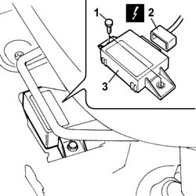

5580H10 parking obstacle detection device electronic control unit - r r
- Path
- Procedures > 55 ELECTRICAL EQUIPMENT > 5580 SPECIAL ACCESSORIES > 5580H parking obstacle detection device > 5580H10 parking obstacle detection device electronic control unit - r r
- Kind
- repair procedure (removal / refitting; the operation number is the code)
- Applies to
- all engines; all production periods
- Interactive page
- https://sloeber94.github.io/elrnDB-fPnd/en/#/2753020
Applies to: all engines; all production periods
 Removing
Removing
 Refitting
RefittingDisconnect the battery negative terminal.
Retract the driver's front seat to the end of travel position.
1. Undo the bolts fixing the control unit.
2. Disconnect the electrical connection for the control unit.
 | Name | Connector |
|---|---|---|
2 | Parking sensor ECU | M84 |
3. Remove the control unit from the housing.

Applies to: all engines; all production periods
Refitting
RemovingFit the control unit in position and secure it using the fixing bolts.
Connect the electrical connection to the control unit.
| Name | Connector |
|---|---|---|
- | Parking sensor ECU | M84 |
Reposition the driver's front seat.
Connect the battery negative terminal.